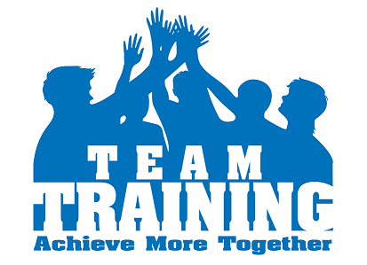

Responsive Design Demo Page ... @Infogain Training Team
Learning and Development Department believe in providing avenues of learning to all individuals at the organization and align individual competencies with organizational objectives. 
The team provides need-based, timely and holistic learning solutions at the individual, team and organizational level. Training is the acquisition of knowledge, skills, and competencies as a result of the teaching of vocational or practical skills and knowledge that relate to specific useful competencies. Training has specific goals of improving one's capability, capacity, productivity and performance. It forms the core of apprenticeships and provides the backbone of content at institutes of technology (also known as technical colleges or polytechnics). In addition to the basic training required for a trade,occupation or profession, observers of the labor-market recognize as of 2008 the need to continue training beyond initial qualifications: to maintain, upgrade and update skills throughout working life. People within many professions and occupations may refer to this sort of training as professional development.
The training solutions are driven by the goals and needs of the employees.
The training need of an employee is determined from the Quarterly Training Plan received from Training Cabinets, Project Managers individual team specific needs, Individual training requirements from TNI.